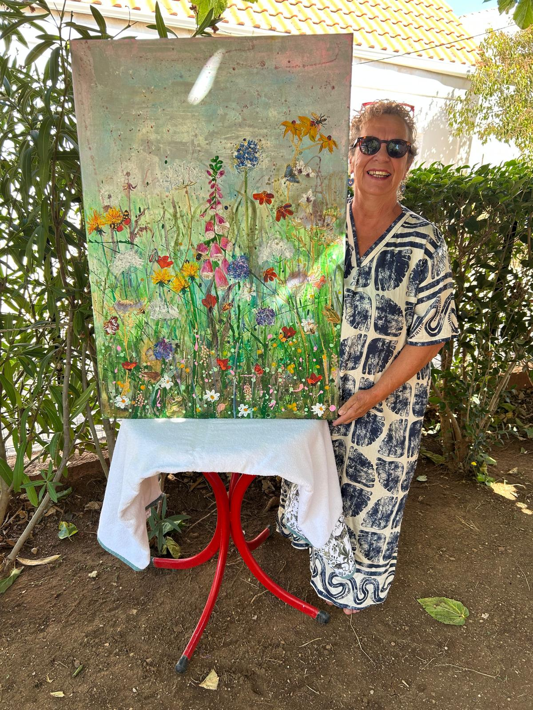

🐚 About Gina
Welcome to my island studio.
I’m Gina Kalogeropoulou, a resin artist living and painting on the tiny Greek island of Trizonia — a place where the sea whispers stories, and every sunrise feels like a brushstroke.
My work is inspired by the creatures and colors that surround me: octopus curling through turquoise waves, sardines shimmering in the shallows, crabs dancing across sun-warmed rocks. I paint mermaids, moonlit villages, and shrimp sipping wine — because art should be joyful, curious, and a little bit magical.
Each piece is made with resin, texture, and love. I layer pigments, gold leaf, and found materials to create depth and movement, like the sea itself. No two pieces are alike — just like no two tides are the same.
Whether you’re here to browse, collect, or simply dream, I’m glad you found your way to my corner of the Aegean.
Let’s dive in.

Gina in her Trizonia studio
Artist Statement
“I paint to keep the Ionian light alive. Each painting is a memory of Trizonia’s sea, sky, and village life.”